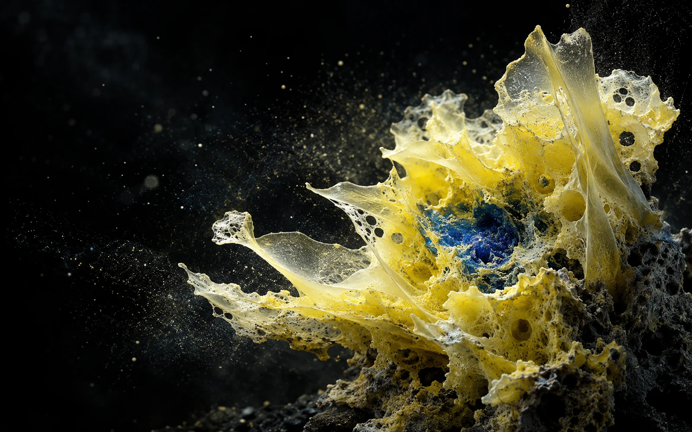
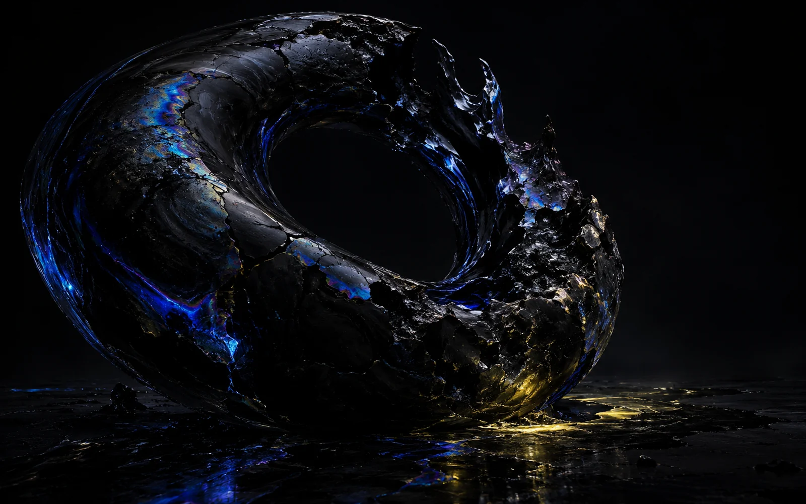

02—05 / Specimen 01
BLUE MEMORY
MEMBRANE
2026
Medium: Synthetic mineral / Light
State: Continuous folding
Archive № 07
Shanghai / Online
Matter begins to remember.
Looking becomes a form of touch.
MORPH gathers three perceptual specimens that could not exist in nature. None holds a fixed shape; every act of looking rearranges it.
Curated by Unit 07
Duration: ∞
MEMBRANE
2026

BLOOM
2026

VOID
2026
“FORM IS NOT AN OBJECT'S EDGE.
IT IS THE TRACE LEFT AFTER
MATTER NEGOTIATES WITH TIME.”
03—05 / Field Note № 118
Recorded at 03:17
04—05 / Complete index
Three unstable forms.
Select a specimen to return to its field.
05—05 / Transmission remains open